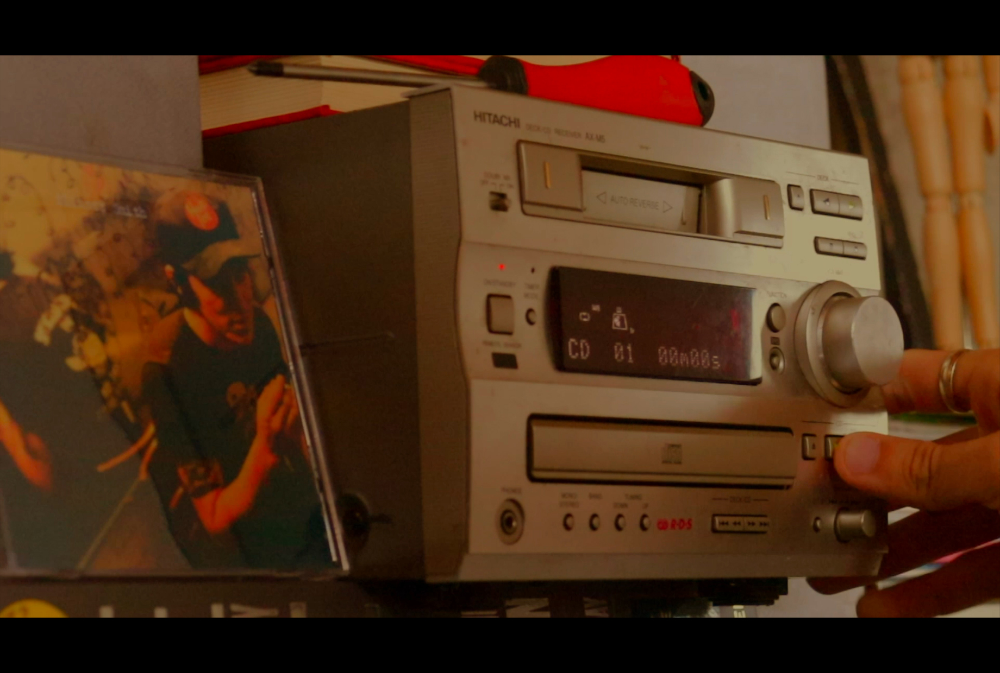
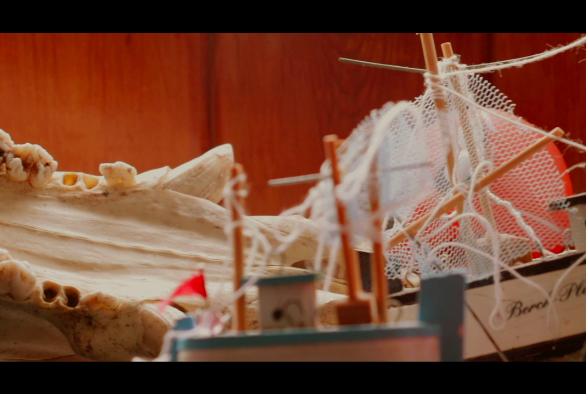
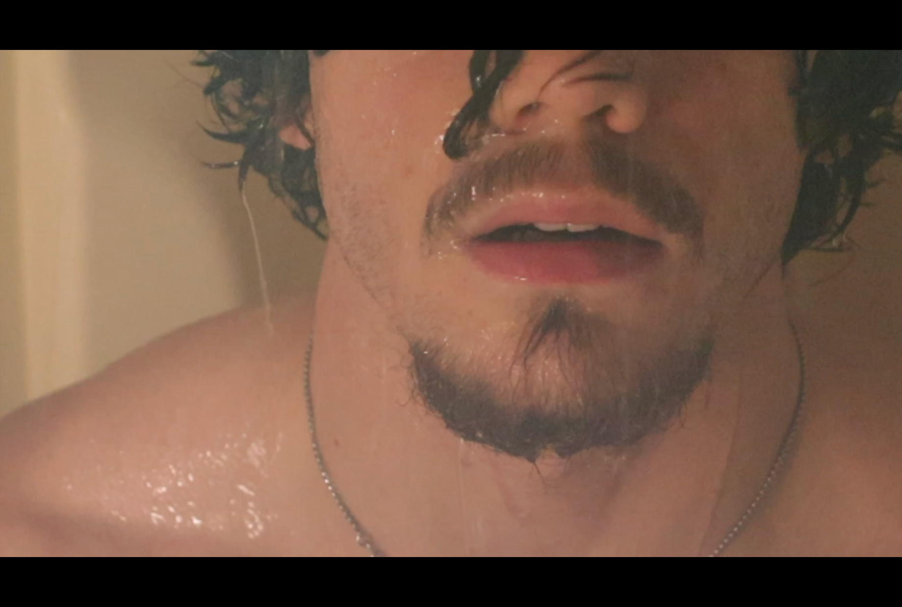
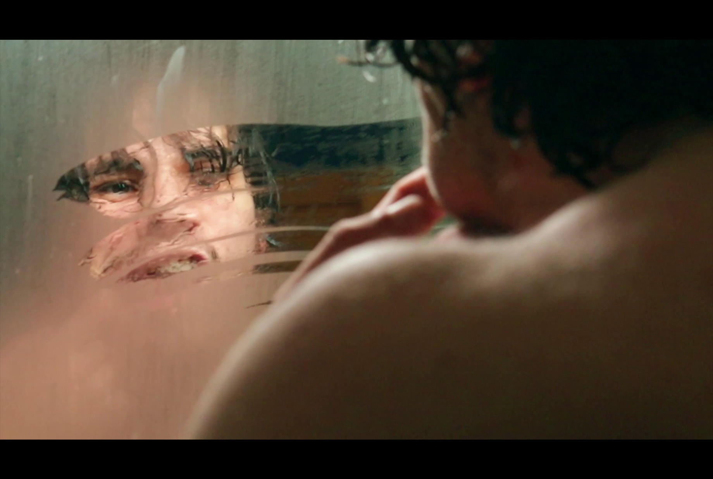
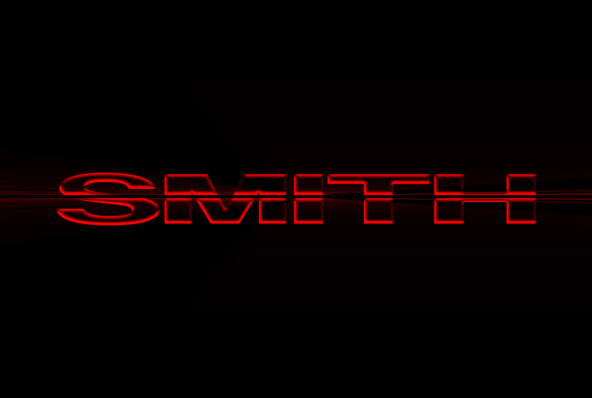

Smith.
Pour ce projet, l'objectif était de réaliser un générique de série fictive. J'ai choisi de m'inspirer de la série "Dexter" dans la construction du générique. A travers le générique, l'objectif est de créer une tension qui tourne autour du personnage principal, un personnage mystérieux et ambigu. J'ai utilisé des images en macro et des mouvements de caméra lents pour créer une atmosphère oppressante et intrigante. Le choix de la musique et du rythme des images contribue également à renforcer cette ambiance.
J'ai été accompagné de deux autres élèves :
- Batiste Delattaignant
- Lucas Delroeux





